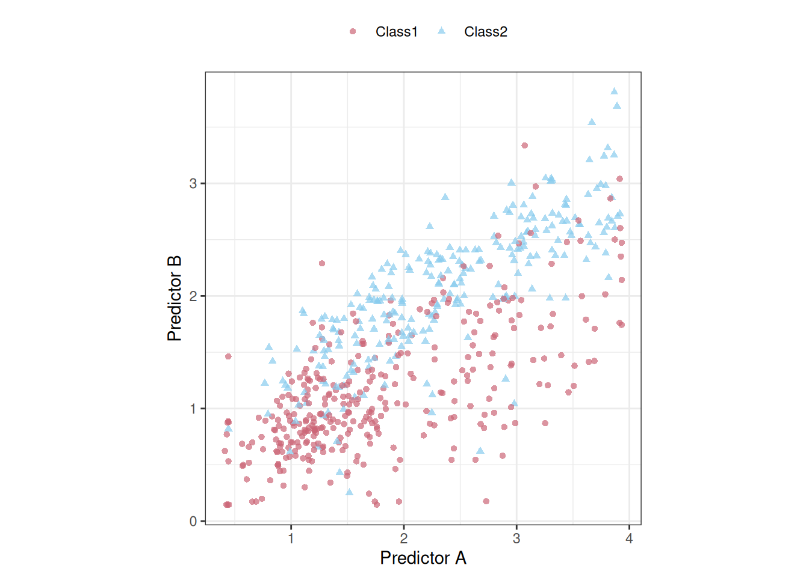
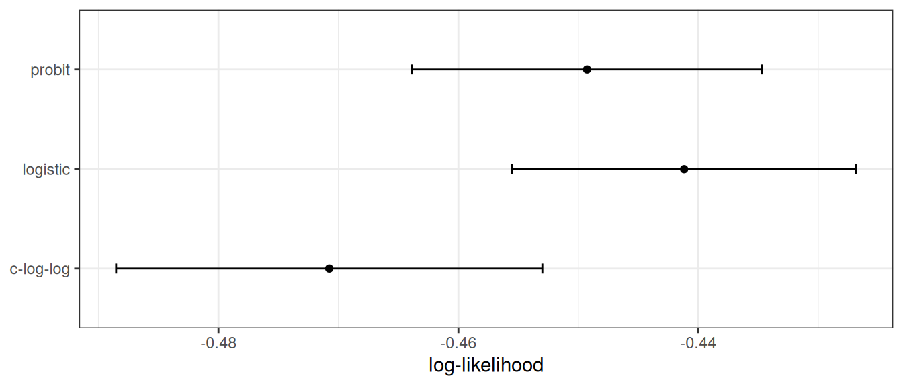
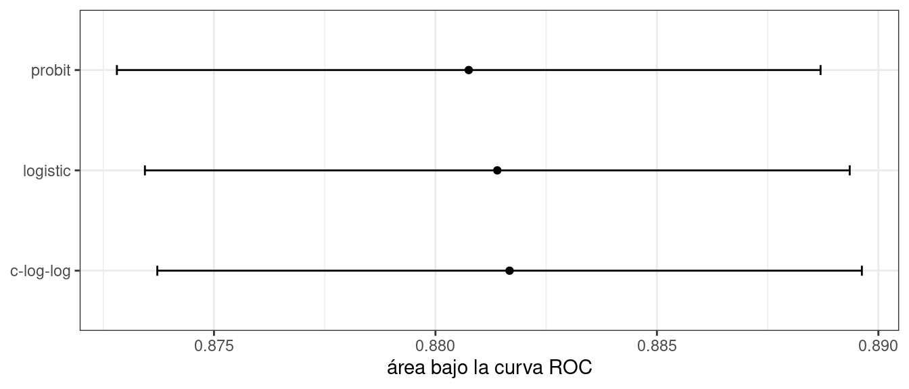
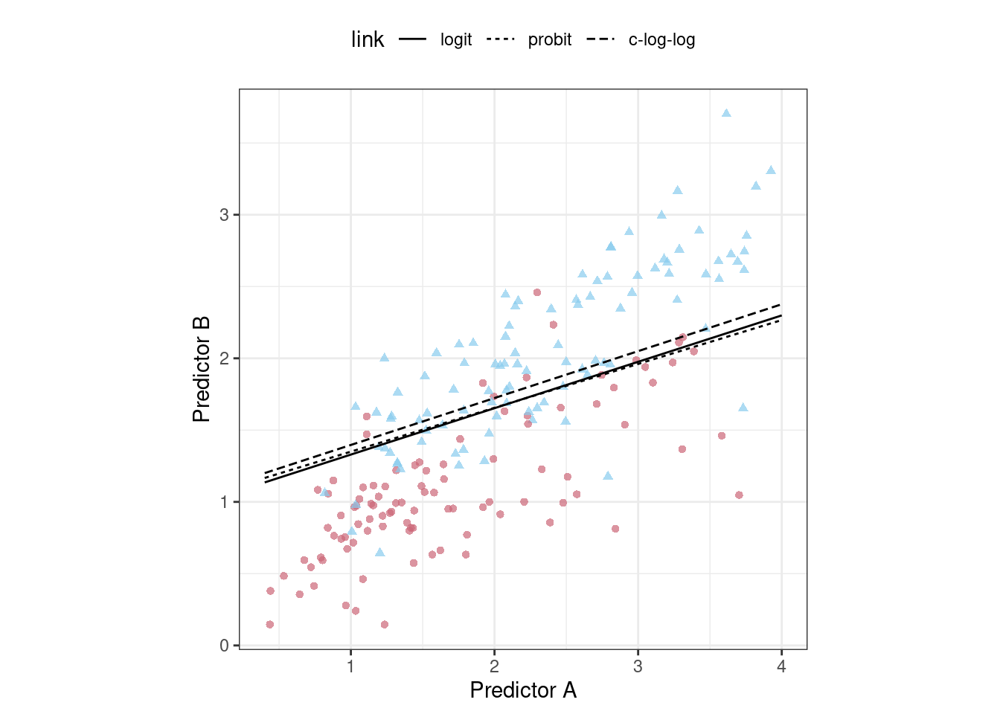
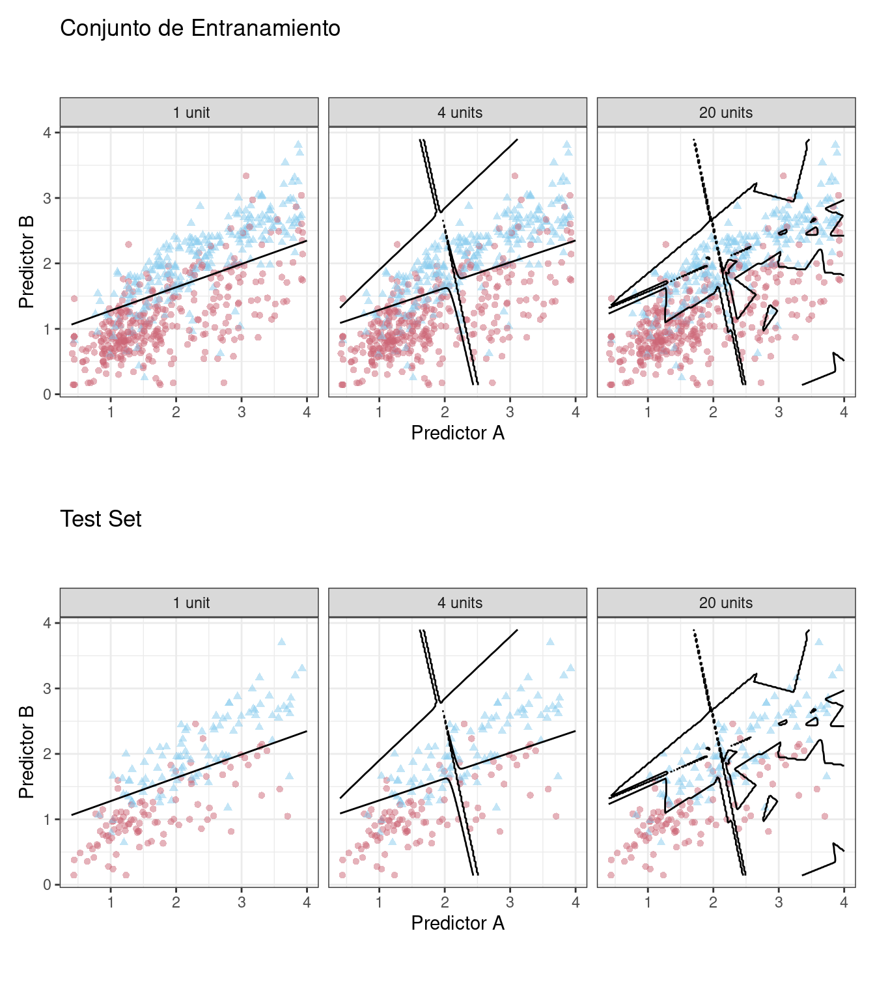

12 Ajuste De Modelos Y Los Peligros Del Sobreajuste
Para utilizar un modelo de predicción, se deben estimar los parámetros de ese modelo. Algunos de estos parámetros se pueden estimar directamente a partir de los datos de entrenamiento, pero otros parámetros, llamados parámetros de ajuste o hiperparámetros, deben especificarse con anticipación y no se pueden encontrar directamente a partir de los datos de entrenamiento. Se trata de valores estructurales o de otro tipo desconocidos que tienen un impacto significativo en el modelo pero que no pueden estimarse directamente a partir de los datos. Este capítulo proporcionará ejemplos de parámetros de ajuste y mostrará cómo usamos las funciones de tidymodels para crear y manejar parámetros de ajuste. También demostraremos cómo una mala elección de estos valores conduce a un sobreajuste e introduciremos varias tácticas para encontrar valores óptimos de los parámetros de ajuste. Los capítulos 13 y 14 detallan más métodos de optimización específicos para el ajuste.
12.1 Parámetros Del Modelo
En la regresión lineal ordinaria, hay dos parámetros \(\beta_0\) y \(\beta_1\) del modelo:
\[ y_i = \beta_0 + \beta_1 x_i + \epsilon_i\]
Cuando tenemos los datos del resultado (\(y\)) y del predictor (\(x\)), podemos estimar los dos parámetros \(\beta_0\) y \(\beta_1\):
\[\hat \beta_1 = \frac{\sum_i (y_i-\bar{y})(x_i-\bar{x})}{\sum_i(x_i-\bar{x})^2}\]
y
\[\hat \beta_0 = \bar{y}-\hat \beta_1 \bar{x}.\]
Podemos estimar directamente estos valores a partir de los datos de este modelo de ejemplo porque son analíticamente manejables; si tenemos los datos, entonces podemos estimar estos parámetros del modelo.
Hay muchas situaciones en las que un modelo tiene parámetros que no pueden estimarse directamente a partir de los datos.
Para el modelo KNN, la ecuación de predicción para un nuevo valor \(x_0\) es
\[\hat y = \frac{1}{K}\sum_{\ell = 1}^K x_\ell^*\]
donde \(K\) es el número de vecinos y \(x_\ell^*\) son los valores de \(K\) más cercanos a \(x_0\) en el conjunto de entrenamiento. El modelo en sí no está definido por una ecuación modelo; en cambio, la ecuación de predicción anterior lo define. Esta característica, junto con la posible intratabilidad de la medida de distancia, hace imposible crear un conjunto de ecuaciones que puedan resolverse para \(K\) (de forma iterativa o no). El número de vecinos tiene un profundo impacto en el modelo; gobierna la flexibilidad de la frontera de clase. Para valores pequeños de \(K\), el límite es muy elaborado, mientras que para valores grandes, puede ser bastante suave.
El número de vecinos más cercanos es un buen ejemplo de parámetro de ajuste o hiperparámetro que no se puede estimar directamente a partir de los datos.
12.2 Parámetros De Ajuste Para Diferentes Tipos De Modelos
Hay muchos ejemplos de ajuste de parámetros o hiperparámetros en diferentes modelos estadísticos y de aprendizaje automático:
Boosting es un método conjunto que combina una serie de modelos base, cada uno de los cuales se crea secuencialmente y depende de los modelos anteriores. El número de iteraciones de impulso es un parámetro de ajuste importante que normalmente requiere optimización.
En la clásica red neuronal artificial de una sola capa (también conocida como perceptrón multicapa), los predictores se combinan utilizando dos o más unidades ocultas. Las unidades ocultas son combinaciones lineales de los predictores que se capturan en una función de activación (normalmente una función no lineal, como una sigmoidea). Las unidades ocultas se conectan luego con las unidades resultantes; se utiliza una unidad de resultado para los modelos de regresión y se requieren múltiples unidades de resultado para la clasificación. El número de unidades ocultas y el tipo de función de activación son parámetros de ajuste estructural importantes.
Los métodos modernos de descenso de gradientes se mejoran al encontrar los parámetros de optimización adecuados. Ejemplos de tales hiperparámetros son las tasas de aprendizaje, el impulso y el número de iteraciones/épocas de optimización (Goodfellow, Bengio, y Courville 2016). Las redes neuronales y algunos modelos de conjuntos utilizan el descenso de gradiente para estimar los parámetros del modelo. Si bien los parámetros de ajuste asociados con el descenso del gradiente no son parámetros estructurales, a menudo requieren ajuste.
En algunos casos, las técnicas de preprocesamiento requieren ajustes:
En el análisis de componentes principales, o su primo supervisado llamado mínimos cuadrados parciales, los predictores se reemplazan con características nuevas y artificiales que tienen mejores propiedades relacionadas con la colinealidad. Se puede ajustar el número de componentes extraídos.
Los métodos de imputación estiman los valores predictivos faltantes utilizando los valores completos de uno o más predictores. Una herramienta de imputación eficaz utiliza \(K\) vecinos más cercanos de las columnas completas para predecir el valor faltante. El número de vecinos modula la cantidad de promedio y se puede ajustar.
Algunos modelos estadísticos clásicos también tienen parámetros estructurales:
En la regresión binaria, el enlace logit se usa comúnmente (es decir, regresión logística). También están disponibles otras funciones de enlace, como probit y log-log complementario (Dobson 1999). Este ejemplo se describe con más detalle en Sección 12.3.
Los modelos de medidas repetidas y longitudinales no bayesianos requieren una especificación para la estructura de covarianza o correlación de los datos. Las opciones incluyen compuesto simétrico (también conocido como intercambiable), autorregresivo, Toeplitz y otros (Littell, Pendergast, y Natarajan 2000).
Un contraejemplo en el que no es apropiado ajustar un parámetro es la distribución previa requerida para el análisis bayesiano. Lo anterior resume la creencia del analista sobre la distribución de una cantidad antes de que se tengan en cuenta la evidencia o los datos. Por ejemplo, en Sección 11.4, utilizamos un modelo ANOVA bayesiano y no teníamos claro cuál debería ser el valor previo para los parámetros de regresión (más allá de ser una distribución simétrica). Elegimos una distribución t con un grado de libertad para la anterior ya que tiene colas más pesadas; esto refleja nuestra incertidumbre adicional. Nuestras creencias previas no deberían estar sujetas a optimización. Los parámetros de ajuste generalmente se optimizan para el rendimiento, mientras que los anteriores no deben modificarse para obtener “los resultados correctos”.
Otro contraejemplo (quizás más discutible) de un parámetro que no necesita ser ajustado es el número de árboles en un randm forest o en un modelo de embolsado. En cambio, este valor debe elegirse para que sea lo suficientemente grande como para garantizar la estabilidad numérica en los resultados; ajustarlo no puede mejorar el rendimiento siempre que el valor sea lo suficientemente grande como para producir resultados confiables. Para random forest, este valor suele ser de miles, mientras que la cantidad de árboles necesarios para el embolsado es de alrededor de 50 a 100.
12.3 ¿Qué Optimizamos?
¿Cómo debemos evaluar los modelos cuando optimizamos los parámetros de ajuste? Depende del modelo y del propósito del modelo.
Para los casos en los que las propiedades estadísticas del parámetro de ajuste son manejables, se pueden utilizar propiedades estadísticas comunes como función objetivo. Por ejemplo, en el caso de la regresión logística binaria, la función de enlace se puede elegir maximizando la probabilidad o los criterios de información. Sin embargo, es posible que estas propiedades estadísticas no se alineen con los resultados obtenidos utilizando propiedades orientadas a la precisión. Como ejemplo, Friedman (2001) optimizó la cantidad de árboles en un conjunto de árboles mejorado y encontró resultados diferentes al maximizar la probabilidad y la precisión:
degradar la probabilidad mediante el sobreajuste en realidad mejora la tasa de error de clasificación errónea. Aunque quizás sea contradictorio, esto no es una contradicción; la probabilidad y la tasa de error miden diferentes aspectos de la calidad del ajuste.
Para demostrarlo, considere los datos de clasificación que se muestran en Figura 12.1 con dos predictores, dos clases y un conjunto de entrenamiento de puntos de datos 593.
Podríamos comenzar ajustando un límite de clase lineal a estos datos. El método más común para hacer esto es utilizar un modelo lineal generalizado en forma de regresión logística. Este modelo relaciona las log odds de que una muestra sea Clase 1 usando la transformación logit:
\[ \log\left(\frac{\pi}{1 - \pi}\right) = \beta_0 + \beta_1x_1 + \ldots + \beta_px_p\]
En el contexto de los modelos lineales generalizados, la función logit es la función de enlace entre el resultado (\(\pi\)) y los predictores. Hay otras funciones de enlace que incluyen el modelo probit:
\[\Phi^{-1}(\pi) = \beta_0 + \beta_1x_1 + \ldots + \beta_px_p\]
donde \(\Phi\) es la función normal estándar acumulativa, así como el modelo log-log complementario:
\[\log(-\log(1-\pi)) = \beta_0 + \beta_1x_1 + \ldots + \beta_px_p\]
Cada uno de estos modelos da como resultado límites de clase lineales. ¿Cuál deberíamos usar? Dado que, para estos datos, el número de parámetros del modelo no varía, el enfoque estadístico es calcular la probabilidad (logaritmo) de cada modelo y determinar el modelo con el valor más grande. Tradicionalmente, la probabilidad se calcula utilizando los mismos datos que se utilizaron para estimar los parámetros, sin utilizar enfoques como la división de datos o el remuestreo de los Capítulos 5 y 10.
Para un marco de datos training_set, creemos una función para calcular los diferentes modelos y extraer las estadísticas de probabilidad para el conjunto de entrenamiento (usando broom::glance()):
library(tidymodels)
tidymodels_prefer()
llhood <- function(...) {
logistic_reg() %>%
set_engine("glm", ...) %>%
fit(Class ~ ., data = training_set) %>%
glance() %>%
select(logLik)
}
bind_rows(
llhood(),
llhood(family = binomial(link = "probit")),
llhood(family = binomial(link = "cloglog"))
) %>%
mutate(link = c("logit", "probit", "c-log-log")) %>%
arrange(desc(logLik))
## # A tibble: 3 × 2
## logLik link
## <dbl> <chr>
## 1 -258. logit
## 2 -262. probit
## 3 -270. c-log-logSegún estos resultados, el modelo logístico tiene las mejores propiedades estadísticas.
A partir de la escala de los valores de probabilidad logarítmica, es difícil entender si estas diferencias son importantes o insignificantes. Una forma de mejorar este análisis es volver a muestrear las estadísticas y separar los datos del modelado de los datos utilizados para la estimación del desempeño. Con este pequeño conjunto de datos, la validación cruzada repetida 10 veces es una buena opción para el remuestreo. En el paquete yardstick, la función mn_log_loss() se usa para estimar la probabilidad logarítmica negativa, y nuestros resultados se muestran en Figura 12.2.
set.seed(1201)
rs <- vfold_cv(training_set, repeats = 10)
# Devuelva las estimaciones de rendimiento individuales remuestreadas:
lloss <- function(...) {
perf_meas <- metric_set(roc_auc, mn_log_loss)
logistic_reg() %>%
set_engine("glm", ...) %>%
fit_resamples(Class ~ A + B, rs, metrics = perf_meas) %>%
collect_metrics(summarize = FALSE) %>%
select(id, id2, .metric, .estimate)
}
resampled_res <-
bind_rows(
lloss() %>% mutate(model = "logistic"),
lloss(family = binomial(link = "probit")) %>% mutate(model = "probit"),
lloss(family = binomial(link = "cloglog")) %>% mutate(model = "c-log-log")
) %>%
# Convierta la pérdida logarítmica en probabilidad logarítmica:
mutate(.estimate = ifelse(.metric == "mn_log_loss", -.estimate, .estimate)) %>%
group_by(model, .metric) %>%
summarize(
mean = mean(.estimate, na.rm = TRUE),
std_err = sd(.estimate, na.rm = TRUE) / sqrt(n()),
.groups = "drop"
)
resampled_res %>%
filter(.metric == "mn_log_loss") %>%
ggplot(aes(x = mean, y = model)) +
geom_point() +
geom_errorbar(aes(xmin = mean - 1.64 * std_err, xmax = mean + 1.64 * std_err),
width = .1) +
labs(y = NULL, x = "log-likelihood")

La escala de estos valores es diferente a los valores anteriores ya que se calculan en un conjunto de datos más pequeño; el valor producido por broom::glance() es una suma mientras que yardstick::mn_log_loss() es un promedio.
Estos resultados muestran evidencia de que la elección de la función de enlace es algo importante. Aunque existe una superposición en los intervalos de confianza, el modelo logístico tiene los mejores resultados.
¿Qué tal una métrica diferente? También calculamos el área bajo la curva ROC para cada remuestreo. Estos resultados, que reflejan la capacidad discriminativa de los modelos a través de numerosos umbrales de probabilidad, muestran una falta de diferencia en Figura 12.3.

Dada la superposición de los intervalos, así como la escala del eje x, se podría utilizar cualquiera de estas opciones. Vemos esto nuevamente cuando los límites de clase para los tres modelos se superponen en el conjunto de prueba de puntos de datos 198 en Figura 12.4.

Este ejercicio enfatiza que diferentes métricas pueden conducir a diferentes decisiones sobre la elección de los valores de los parámetros de ajuste. En este caso, una métrica indica que los modelos son algo diferentes mientras que otra métrica no muestra ninguna diferencia.
Thomas y Uminsky (2020) analiza exhaustivamente la optimización de métricas y explora varios temas, incluido el juego de métricas. Advierten que:
La eficacia irrazonable de la optimización de métricas en los enfoques actuales de IA es un desafío fundamental para el campo y genera una contradicción inherente: la optimización exclusiva de las métricas conduce a resultados que distan mucho de ser óptimos.
12.4 Las Consecuencias De Las Malas Estimaciones De Parámetros
Muchos parámetros de ajuste modulan la cantidad de complejidad del modelo. Una mayor complejidad a menudo implica una mayor maleabilidad en los patrones que un modelo puede emular. Por ejemplo, como se muestra en Sección 8.4.3, agregar grados de libertad en una función spline aumenta la complejidad de la ecuación de predicción. Si bien esto es una ventaja cuando los motivos subyacentes de los datos son complejos, también puede conducir a una sobreinterpretación de patrones aleatorios que no se reproducirían en datos nuevos. Sobreajuste es la situación en la que un modelo se adapta demasiado a los datos de entrenamiento; funciona bien con los datos utilizados para construir el modelo, pero mal con datos nuevos.
Dado que ajustar los parámetros del modelo puede aumentar la complejidad del modelo, las malas elecciones pueden provocar un sobreajuste.
Recuerde el modelo de red neuronal de una sola capa descrito en Sección 12.2. Con una única unidad oculta y funciones de activación sigmoideas, una red neuronal para clasificación es, para todos los efectos, solo una regresión logística. Sin embargo, a medida que aumenta el número de unidades ocultas, también aumenta la complejidad del modelo. De hecho, cuando el modelo de red utiliza unidades de activación sigmoidales, Cybenko (1989) demostró que el modelo es un aproximador de función universal siempre que haya suficientes unidades ocultas.
Ajustamos modelos de clasificación de redes neuronales a los mismos datos de dos clases de la sección anterior, variando el número de unidades ocultas. Utilizando el área bajo la curva ROC como métrica de rendimiento, la efectividad del modelo en el conjunto de entrenamiento aumenta a medida que se agregan más unidades ocultas. El modelo de red aprende completa y meticulosamente el conjunto de entrenamiento. Si el modelo se juzga a sí mismo por el valor ROC del conjunto de entrenamiento, prefiere muchas unidades ocultas para poder casi eliminar los errores.
Los capítulos 5 y 10 demostraron que simplemente repredecir el conjunto de entrenamiento es un enfoque deficiente para la evaluación de modelos. Aquí, la red neuronal muy rápidamente comienza a sobreinterpretar los patrones que ve en el conjunto de entrenamiento. Compare estos tres límites de clase de ejemplo (desarrollados con el conjunto de entrenamiento) superpuestos en los conjuntos de entrenamiento y prueba en Figura 12.5.

El modelo unitario no se adapta con mucha flexibilidad a los datos (ya que está obligado a ser lineal). Un modelo con cuatro unidades ocultas comienza a mostrar signos de sobreajuste con un límite poco realista para valores alejados de la corriente principal de datos. Esto se debe a un único punto de datos de la primera clase en la esquina superior derecha de los datos. Con 20 unidades ocultas, el modelo comienza a memorizar el conjunto de entrenamiento, creando pequeñas islas alrededor de esos datos para minimizar la tasa de error de resustitución. Estos patrones no se repiten en el conjunto de prueba. Este último panel es la mejor ilustración de cómo se deben modular los parámetros de ajuste que controlan la complejidad para que el modelo sea efectivo. Para un modelo de 20 unidades, el conjunto de entrenamiento ROC AUC es 0.944 pero el valor del conjunto de prueba es 0.855.
Esta ocurrencia de sobreajuste es obvia con dos predictores que podemos trazar. Sin embargo, en general, debemos utilizar un enfoque cuantitativo para detectar el sobreajuste.
La solución para detectar cuándo un modelo está exagerando el conjunto de entrenamiento es utilizar datos fuera de la muestra.
En lugar de utilizar el conjunto de prueba, se requiere algún tipo de remuestreo. Esto podría significar un enfoque iterativo (por ejemplo, una validación cruzada de 10 veces) o una única fuente de datos (por ejemplo, un conjunto de validación).
12.5 Dos Estrategias Generales Para La Optimización.
La optimización de los parámetros de ajuste generalmente se divide en una de dos categorías: búsqueda en cuadrícula y búsqueda iterativa.
Búsqueda de cuadrícula es cuando predefinimos un conjunto de valores de parámetros para evaluar. Las principales opciones involucradas en la búsqueda de cuadrículas son cómo hacer la cuadrícula y cuántas combinaciones de parámetros evaluar. La búsqueda de cuadrícula a menudo se considera ineficiente ya que la cantidad de puntos de cuadrícula necesarios para cubrir el espacio de parámetros puede volverse inmanejable debido a la maldición de la dimensionalidad. Hay algo de verdad en esta preocupación, pero es más cierta cuando el proceso no está optimizado. Esto se analiza con más detalle en el Capítulo 13.
Búsqueda iterativa o búsqueda secuencial es cuando descubrimos secuencialmente nuevas combinaciones de parámetros en función de resultados anteriores. Casi cualquier método de optimización no lineal es apropiado, aunque algunos son más eficientes que otros. En algunos casos, se requiere un conjunto inicial de resultados para una o más combinaciones de parámetros para iniciar el proceso de optimización. La búsqueda iterativa se analiza con más detalle en el Capítulo 14.
Figura 12.6 muestra dos paneles que demuestran estos dos enfoques para una situación con dos parámetros de ajuste que oscilan entre cero y uno. En cada uno, un conjunto de contornos muestra la relación verdadera (simulada) entre los parámetros y el resultado. Los resultados óptimos se encuentran en las esquinas superiores derechas.

El panel izquierdo de Figura 12.6 muestra un tipo de cuadrícula llamada diseño de relleno de espacio. Este es un tipo de diseño experimental diseñado para cubrir el espacio de parámetros de manera que las combinaciones de parámetros de ajuste no estén cercanas entre sí. Los resultados de este diseño no colocan ningún punto exactamente en la ubicación verdaderamente óptima. Sin embargo, un punto está en la vecindad general y probablemente tendría resultados de métricas de rendimiento que estén dentro del ruido del valor más óptimo.
El panel derecho de Figura 12.6 ilustra los resultados de un método de búsqueda global: el método simplex de Nelder-Mead (Olsson y Nelson 1975). El punto de partida está en la parte inferior izquierda del espacio de parámetros. La búsqueda serpentea por el espacio hasta llegar a la ubicación óptima, donde se esfuerza por acercarse lo más posible al mejor valor numérico. Este método de búsqueda en particular, aunque eficaz, no es conocido por su eficiencia; requiere muchas evaluaciones de funciones, especialmente cerca de los valores óptimos. El Capítulo 14 analiza algoritmos de búsqueda más eficientes.
Las estrategias híbridas también son una opción y pueden funcionar bien. Después de una búsqueda inicial de cuadrícula, puede comenzar una optimización secuencial a partir de la mejor combinación de cuadrícula.
En los dos capítulos siguientes se analizan en detalle ejemplos de estas estrategias. Antes de continuar, aprendamos cómo trabajar con objetos de parámetros de ajuste en tidymodels, usando el paquete dials.
12.6 Ajuste De Parámetros En tidymodels
Ya hemos tratado un buen número de argumentos que corresponden a parámetros de ajuste para especificaciones de recetas y modelos en capítulos anteriores. Es posible sintonizar:
el umbral para combinar vecindarios en una categoría “otra” (con el nombre de argumento
threshold) discutido en Sección 8.4.1el número de grados de libertad en un spline natural (
deg_free, Sección 8.4.3)el número de puntos de datos necesarios para ejecutar una división en un modelo basado en árbol (
min_n, Sección 6.1)el importe de la regularización en los modelos penalizados (
penalty, Sección 6.1)
Para las especificaciones del modelo parsnip, hay dos tipos de argumentos de parámetros. Los argumentos principales son aquellos que con mayor frecuencia están optimizados para el rendimiento y están disponibles en múltiples motores. Los principales parámetros de ajuste son argumentos de nivel superior para la función de especificación del modelo. Por ejemplo, la función rand_forest() tiene argumentos principales trees, min_n y mtry, ya que estos se especifican u optimizan con mayor frecuencia.
Un conjunto secundario de parámetros de ajuste son específicos del motor. Estos se optimizan con poca frecuencia o son específicos solo para ciertos motores. Nuevamente usando random forest como ejemplo, el paquete ranger contiene algunos argumentos que no son utilizados por otros paquetes. Un ejemplo es la penalización de ganancia, que regulariza la selección de predictores en el proceso de inducción del árbol. Este parámetro puede ayudar a modular el equilibrio entre la cantidad de predictores utilizados en el conjunto y el rendimiento (Wundervald, Parnell, y Domijan 2020). El nombre de este argumento en ranger() es regularization.factor. Para especificar un valor mediante una especificación de modelo parsnip, se agrega como argumento complementario a set_engine():
rand_forest(trees = 2000, min_n = 10) %>% # <- argumentos principales
set_engine("ranger", regularization.factor = 0.5) # <- específico del motorLos argumentos principales utilizan un sistema de nombres armonizado para eliminar inconsistencias entre motores, mientras que los argumentos específicos del motor no lo hacen.
¿Cómo podemos indicar a las funciones de tidymodels qué argumentos deben optimizarse? Los parámetros se marcan para su ajuste asignándoles un valor de tune(). Para la red neuronal de una sola capa utilizada en Sección 12.4, la cantidad de unidades ocultas se designa para ajustar usando:
neural_net_spec <-
mlp(hidden_units = tune()) %>%
set_mode("regression") %>%
set_engine("keras")La función tune() no ejecuta ningún valor de parámetro en particular; solo devuelve una expresión:
tune()
## tune()Incrustar este valor tune() en un argumento etiquetará el parámetro para su optimización. Las funciones de ajuste del modelo que se muestran en los dos capítulos siguientes analizan la especificación y/o receta del modelo para descubrir los parámetros etiquetados. Estas funciones pueden configurar y procesar automáticamente estos parámetros ya que comprenden sus características (por ejemplo, el rango de valores posibles, etc.).
Para enumerar los parámetros de ajuste de un objeto, utilice la función extract_parameter_set_dials():
extract_parameter_set_dials(neural_net_spec)
## Collection of 1 parameters for tuning
##
## identifier type object
## hidden_units hidden_units nparam[+]Los resultados muestran un valor de nparam[+], lo que indica que el número de unidades ocultas es un parámetro numérico.
Hay un argumento de identificación opcional que asocia un nombre con los parámetros. Esto puede resultar útil cuando se ajusta el mismo tipo de parámetro en diferentes lugares. Por ejemplo, con los datos de vivienda de Ames de Sección 10.6, la receta codificó tanto la longitud como la latitud con funciones spline. Si queremos ajustar las dos funciones spline para que potencialmente tengan diferentes niveles de suavidad, llamamos a step_ns() dos veces, una para cada predictor. Para que los parámetros sean identificables, el argumento de identificación puede tomar cualquier cadena de caracteres:
ames_rec <-
recipe(Sale_Price ~ Neighborhood + Gr_Liv_Area + Year_Built + Bldg_Type +
Latitude + Longitude, data = ames_train) %>%
step_log(Gr_Liv_Area, base = 10) %>%
step_other(Neighborhood, threshold = tune()) %>%
step_dummy(all_nominal_predictors()) %>%
step_interact( ~ Gr_Liv_Area:starts_with("Bldg_Type_") ) %>%
step_ns(Longitude, deg_free = tune("longitude df")) %>%
step_ns(Latitude, deg_free = tune("latitude df"))
recipes_param <- extract_parameter_set_dials(ames_rec)
recipes_param
## Collection of 3 parameters for tuning
##
## identifier type object
## threshold threshold nparam[+]
## longitude df deg_free nparam[+]
## latitude df deg_free nparam[+]Tenga en cuenta que las columnas identifier y type no son las mismas para ambos parámetros de spline.
Cuando se combinan una receta y una especificación de modelo mediante un flujo de trabajo, se muestran ambos conjuntos de parámetros:
wflow_param <-
workflow() %>%
add_recipe(ames_rec) %>%
add_model(neural_net_spec) %>%
extract_parameter_set_dials()
wflow_param
## Collection of 4 parameters for tuning
##
## identifier type object
## hidden_units hidden_units nparam[+]
## threshold threshold nparam[+]
## longitude df deg_free nparam[+]
## latitude df deg_free nparam[+]Las redes neuronales son exquisitamente capaces de emular patrones no lineales. No es necesario agregar términos splines a este tipo de modelo; combinamos este modelo y receta solo con fines ilustrativos.
Cada argumento de parámetro de ajuste tiene una función correspondiente en el paquete dials. En la gran mayoría de los casos, la función tiene el mismo nombre que el argumento del parámetro:
hidden_units()
## # Hidden Units (quantitative)
## Range: [1, 10]
threshold()
## Threshold (quantitative)
## Range: [0, 1]El parámetro deg_free es un contraejemplo; la noción de grados de libertad surge en una variedad de contextos diferentes. Cuando se usa con splines, hay una función especializada dials llamada spline_title() que, de forma predeterminada, se invoca para splines:
spline_degree()
## Spline Degrees of Freedom (quantitative)
## Range: [1, 10]El paquete dials también tiene una función conveniente para extraer un objeto de parámetro particular:
# identifique el parámetro usando el valor de id:
wflow_param %>% extract_parameter_dials("threshold")
## Threshold (quantitative)
## Range: [0, 0.1]Dentro del conjunto de parámetros, el rango de parámetros también se puede actualizar en el lugar:
extract_parameter_set_dials(ames_rec) %>%
update(threshold = threshold(c(0.8, 1.0)))
## Collection of 3 parameters for tuning
##
## identifier type object
## threshold threshold nparam[+]
## longitude df deg_free nparam[+]
## latitude df deg_free nparam[+]Los conjuntos de parámetros creados por extract_parameter_set_dials() son consumidos por las funciones de ajuste de tidymodels (cuando sea necesario). Si los valores predeterminados de los objetos de parámetros de ajuste requieren modificación, se pasa un conjunto de parámetros modificado a la función de ajuste adecuada.
Algunos parámetros de ajuste dependen de las dimensiones de los datos. Por ejemplo, el número de vecinos más cercanos debe estar entre uno y el número de filas de los datos.
En algunos casos, es fácil tener valores predeterminados razonables para el rango de valores posibles. En otros casos, el rango de parámetros es crítico y no se puede asumir. El principal parámetro de ajuste para los modelos de random forest es el número de columnas predictoras que se muestrean aleatoriamente para cada división del árbol, normalmente denominada “mtry()”. Sin conocer la cantidad de predictores, este rango de parámetros no se puede preconfigurar y requiere finalización.
rf_spec <-
rand_forest(mtry = tune()) %>%
set_engine("ranger", regularization.factor = tune("regularization")) %>%
set_mode("regression")
rf_param <- extract_parameter_set_dials(rf_spec)
rf_param
## Collection of 2 parameters for tuning
##
## identifier type object
## mtry mtry nparam[?]
## regularization regularization.factor nparam[+]
##
## Model parameters needing finalization:
## # Randomly Selected Predictors ('mtry')
##
## See `?dials::finalize` or `?dials::update.parameters` for more information.Los objetos de parámetros completos tienen [+] en su resumen; un valor de [?] indica que falta al menos un extremo del rango posible. Hay dos métodos para manejar esto. La primera es usar update(), para agregar un rango basado en lo que sabes sobre las dimensiones de datos:
rf_param %>%
update(mtry = mtry(c(1, 70)))
## Collection of 2 parameters for tuning
##
## identifier type object
## mtry mtry nparam[+]
## regularization regularization.factor nparam[+]Sin embargo, es posible que este enfoque no funcione si se adjunta una receta a un flujo de trabajo que utiliza pasos que suman o restan columnas. Si esos pasos no están programados para ajustarse, la función finalize() puede ejecutar la receta una vez para obtener las dimensiones:
pca_rec <-
recipe(Sale_Price ~ ., data = ames_train) %>%
# Seleccione los predictores de pies cuadrados y extraiga sus componentes PCA:
step_normalize(contains("SF")) %>%
# Seleccione el número de componentes necesarios para capturar el 95% de
# la varianza en los predictores.
step_pca(contains("SF"), threshold = .95)
updated_param <-
workflow() %>%
add_model(rf_spec) %>%
add_recipe(pca_rec) %>%
extract_parameter_set_dials() %>%
finalize(ames_train)
updated_param
## Collection of 2 parameters for tuning
##
## identifier type object
## mtry mtry nparam[+]
## regularization regularization.factor nparam[+]
updated_param %>% extract_parameter_dials("mtry")
## # Randomly Selected Predictors (quantitative)
## Range: [1, 74]Cuando se prepara la receta, la función finalize() aprende a establecer el rango superior de mtry en 74 predictores.
Además, los resultados de extract_parameter_set_dials() incluirán parámetros específicos del motor (si los hay). Se descubren de la misma manera que los argumentos principales y se incluyen en el conjunto de parámetros. El paquete dials contiene funciones de parámetros para todos los parámetros específicos del motor potencialmente ajustables:
rf_param
## Collection of 2 parameters for tuning
##
## identifier type object
## mtry mtry nparam[?]
## regularization regularization.factor nparam[+]
##
## Model parameters needing finalization:
## # Randomly Selected Predictors ('mtry')
##
## See `?dials::finalize` or `?dials::update.parameters` for more information.
regularization_factor()
## Gain Penalization (quantitative)
## Range: [0, 1]Finalmente, algunos parámetros de ajuste se asocian mejor con las transformaciones. Un buen ejemplo de esto es el parámetro de penalización asociado con muchos modelos de regresión regularizados. Este parámetro no es negativo y es común variar sus valores en unidades logarítmicas. El objeto de parámetro principal dials indica que se utiliza una transformación de forma predeterminada:
penalty()
## Amount of Regularization (quantitative)
## Transformer: log-10 [1e-100, Inf]
## Range (transformed scale): [-10, 0]Es importante saber esto, especialmente al modificar el rango. Los valores del nuevo rango deben estar en las unidades transformadas:
# método correcto para tener valores de penalización entre 0,1 y 1,0
penalty(c(-1, 0)) %>% value_sample(1000) %>% summary()
## Min. 1st Qu. Median Mean 3rd Qu. Max.
## 0.101 0.181 0.327 0.400 0.589 0.999
# incorrecto:
penalty(c(0.1, 1.0)) %>% value_sample(1000) %>% summary()
## Min. 1st Qu. Median Mean 3rd Qu. Max.
## 1.26 2.21 3.68 4.26 5.89 10.00La escala se puede cambiar si se desea con el argumento trans. Puedes usar unidades naturales pero del mismo rango:
penalty(trans = NULL, range = 10^c(-10, 0))
## Amount of Regularization (quantitative)
## Range: [1e-10, 1]12.7 Resumen Del Capítulo
Este capítulo presentó el proceso de ajuste de los hiperparámetros del modelo que no se pueden estimar directamente a partir de los datos. Ajustar dichos parámetros puede conducir a un sobreajuste, a menudo al permitir que un modelo se vuelva demasiado complejo, por lo que es importante utilizar conjuntos de datos remuestreados junto con métricas apropiadas para la evaluación. Hay dos estrategias generales para determinar los valores correctos, la búsqueda en cuadrícula y la búsqueda iterativa, que exploraremos en profundidad en los dos capítulos siguientes. En tidymodels, la función tune() se usa para identificar parámetros para optimización, y las funciones del paquete dials pueden extraer e interactuar con objetos de parámetros de ajuste.